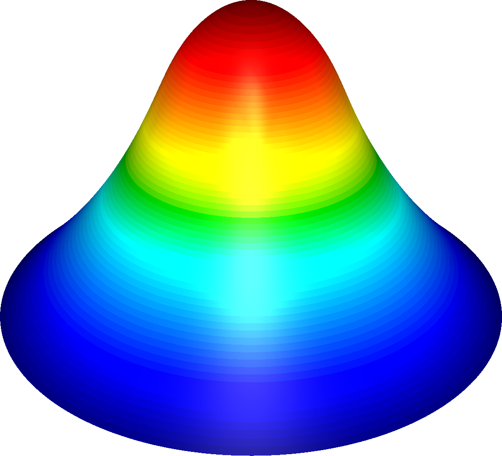
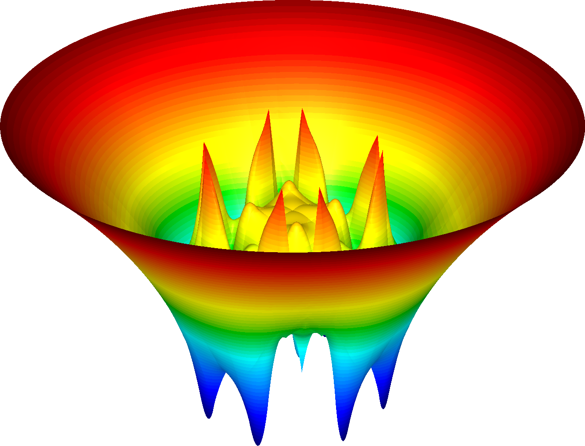

The Obstacle Problem
by Noe Reyes Rivas, Brown University
30 minutes intermediate
Lesson Objectives
Learn how to solve nonlinear variational systems in MFEM.
Note
The obstacle problem is an example of a free boundary problem. Particularly, the task is to find the resting position of an elastic membrane with fixed boundary, constrained to lie above a given obstacle. In mathematical terms, we seek to minimize the Dirichlet energy functional
$$ J(v) = \frac{1}{2} \int_\Omega |\nabla v|^2 \, \mathrm{d} x $$
over the set of admissible functions
$$ K = \{v \in H^1(\Omega) : v|_{\partial \Omega} = g \text{ and } v \geq \varphi\}, $$
where $\Omega$ is an open bounded domain with smooth boundary and $\varphi$ is a smooth function representing the obstacle.
We will discretize and solve this problem using the proximal Galerkin finite element method, introduced by Keith and Surowiec. In this method, given linear subspaces $V_h \subset H_0^1(\Omega)$ and $W_h \subset L^\infty(\Omega)$, we aim to find $u_h \in g_h + V_h$ and $\psi_h \in W_h$ such that
$$ \begin{equation} \begin{aligned} (\alpha_{k+1} \nabla u_h, \nabla v) + (\psi_h, v) &= (\psi_h^k, v) && \text{for all } v \in V_h, \\ (u_h,w) - (\exp \psi_h, w) &= (\varphi,w) && \text{for all } w \in W_h, \end{aligned} \end{equation} $$
where $\alpha_k > 0$ is a sequence of step sizes and $g_h \in H^1(\Omega)$ provides an approximation of the boundary values $g_h|_{\partial \Omega} \approx g$. Equation (3) is a coupled system of $(u,\psi)$ and is nonlinear in $\psi$. To solve it, we apply an inexact Newton-Raphson method1 and resulting in the following linearized saddle-point problems: find $u_h \in V_h$ and $\delta \psi_h \in W_h$ such that2
$$ \begin{equation} \begin{aligned} (\alpha_{k+1} \nabla u_h,\nabla v) + (\delta \psi_h, v) &= (\psi_h^k - \psi_h, v) && \text{for all } v \in V_h, \\ (u_h,w) - c_\varepsilon(\psi_h,\delta \psi_h,w) &= (\varphi + \exp \psi_h,w) && \text{for all } w \in W_h, \end{aligned} \end{equation} $$
where
$$ c_\varepsilon(\psi_h,\delta \psi_h,w) = \begin{cases} (\delta \psi_h \exp \psi_h, w) + \varepsilon (\delta \psi_h, w) & \text{if } W_h \in \mathrm{ker}(\nabla_h), \\ (\delta \psi_h \exp \psi_h, w) + \varepsilon (\nabla_h \delta \psi_h, \nabla_h w) & \text{otherwise.} \end{cases} $$
We then assign $\psi_h \leftarrow \psi_h + \delta \psi_h$ and repeat solving (4) until a tolerance condition is satisfied. After this, we assign $u_h^k \leftarrow u_h$ and $\psi_h^k \leftarrow \psi_h$, updating the right-hand side of (3) and returning to (4) until another tolerance condition is satisfied.
Annotated Example 36
MFEM's Example 36 implements the FEM described above for an obstacle problem over a unit-radius circular domain $\Omega$ with $\varphi$ set to be a half-sphere centered at its origin. Noting that contact occurs before $r = \sqrt{x^2 + y^2}$ reaches $9/20$, we put $\varphi \in C^1$ for better accuracy by setting
$$ \varphi(r) = \sqrt{1/4 - r^2} , $$
if $r \leq 9/20$, while extending $\varphi$ linearly after $r = 9/20$.
See the function spherical_obstacle in lines 401-421 for the precise definition.
Below, we highlight selected portions of the example code and connect them with
the description in the previous section. You can follow along by browsing
ex36.cpp in your VS Code browser window. In the settings of this tutorial,
the visualization will automatically update in the GLVis browser window.
The Mesh
The computational mesh for this problem is set to disc-nurbs.mesh in line
109. We can
use GLVis to generate a visualization of this mesh by running glvis -m
disc-nurbs.mesh.
The code in lines
108-111
loads the mesh from the given file, mesh_file and creates the corresponding
MFEM object mesh of class Mesh.
Mesh mesh(mesh_file, 1, 1);
int dim = mesh.Dimension();
The following code (lines
113-118)
refines the mesh uniformly three times. You can easily modify the refinement by
changing the definition of ref_levels.
for (int l = 0; l < ref_levels; l++)
{
mesh.UniformRefinement();
}
Next, we control the geometric approximation by setting the curvature of our mesh to have order at least two in lines 122-123.
int curvature_order = max(order,2);
mesh.SetCurvature(curvature_order);
Lastly, the code in 125-128 rescales the domain to a unit circle.
GridFunction *nodes = mesh.GetNodes();
real_t scale = 2*sqrt(2);
*nodes /= scale;
Defining Variables and Spaces
In the next section we create the finite element space, i.e., specify the
finite element basis functions on the mesh. This involves the MFEM class and
FiniteElementSpace, which connects the space and the mesh.
Focusing on the common case order > 0, the code in lines
131-140
is essentially:
H1_FECollection H1fec(order+1, dim);
FiniteElementSpace H1fes(&mesh, &H1fec);
L2_FECollection L2fec(order-1, dim);
FiniteElementSpace L2fes(&mesh, &L2fec);
cout << "Number of H1 finite element unknowns: "
<< H1fes.GetTrueVSize() << endl;
cout << "Number of L2 finite element unknowns: "
<< L2fes.GetTrueVSize() << endl;
The space H1fes will hold our primal solutions $u_h$, while the space
L2fes3 will hold our latent solution increments $\delta \psi_h$. In order to deal
with the many bilinear and linear forms present in (4), we will use block
matrices (which will be built using offsets defined below) and block vectors
(rhs) to assign each bilinear and linear form a block.
The block vector x will contain two blocks, one for the DOFs of $u_h$ and one
for the DOFs of $\delta \psi_h$. The block sizes, then, are determined by the
number of DOFs in each finite element space. In MFEM, we use the GetVSize
method of the FiniteElementSpace class to get the number of (vector) DOFs for
a given finite element space. Furthermore, we construct block vectors by
specifying the offsets of each block through an Array<int> object of size
equal to the number of blocks plus one.
We compute the offsets in lines
142-149.
The PartialSum method of the Array<T> class is used so that we need only
specify the sizes of each block in lines
144-145.
After line
146, the
resulting offsets array will read [0, H1fes.GetVSize(), H1fes.GetVSize() +
L2fes.GetVSize()], so that the first block in x and rhs has size
$$ \begin{aligned} \mathtt{offsets[1]} - \mathtt{offsets[0]} &= \mathtt{H1fes.GetVSize()} - 0 \\ &= \mathtt{H1fes.GetVSize()} \end{aligned} $$
and the second block has size
$$ \begin{aligned} \mathtt{offsets[2]} - \mathtt{offsets[1]} &= (\mathtt{H1fes.GetVSize()} + \mathtt{L2fes.GetVSize()}) - \mathtt{H1fes.GetVSize()} \\ &= \mathtt{L2fes.GetVSize()}. \end{aligned} $$
In sum, our code reads
Array<int> offsets(3);
offsets[0] = 0;
offsets[1] = H1fes.GetVSize();
offsets[2] = L2fes.GetVSize();
offsets.PartialSum();
BlockVector x(offsets), rhs(offsets);
x = 0.0; rhs = 0.0;
The finite element degrees of freedom that are on the domain boundary are then extracted in lines 151-157. We need those to impose the Dirichlet boundary conditions.
Array<int> ess_bdr;
if (mesh.bdr_attributes.Size())
{
ess_bdr.SetSize(mesh.bdr_attributes.Max());
ess_bdr = 1;
}
Next, in lines 159-169, we make an initial guess for the solution, namely that $u(x) = 1 - \|x\|^2$. Note that such a guess preserves the boundary condition, $u(x) = 0$ when $\|x\| = 1$.
auto IC_func = [](const Vector &x)
{
real_t r0 = 1.0;
real_t rr = 0.0;
for (int i=0; i<x.Size(); i++)
{
rr += x(i)*x(i);
}
return r0*r0 - rr;
};
The finite element approximation $u_h$ is described in MFEM as a GridFunction
belonging to the FiniteElementSpace H1fes. Similarly, $\delta \psi_h$ belongs to the FiniteElementSpace L2fes. See lines 173-179.
GridFunction u_gf, delta_psi_gf;
u_gf.MakeRef(&H1fes,x,offsets[0]);
delta_psi_gf.MakeRef(&L2fes,x,offsets[1]);
We will also store the previous iteration's solution for step-by-step comparisons.
GridFunction u_old_gf(&H1fes);
GridFunction psi_old_gf(&L2fes);
GridFunction psi_gf(&L2fes);
Next, we define the function coefficients for the solution and use them to
initialize the initial guess. We also define the exact solution of our problem
with the function exact_solution_obstacle defined in lines
423-439,
as well as its gradient exact_solution_gradient_obstacle in lines
441-459,
to compute error. We will need these for computing the error in our finite
element solution. As our solution is a scalar function, we set the type of
exact_coef to FunctionCoefficient and the type of its gradient
exact_grad_coef, a vector valued function, to VectorFunctionCoefficient. is
Recall that the function spherical_obstacle represents our obstacle function
$\varphi$ in (4).
FunctionCoefficient exact_coef(exact_solution_obstacle);
VectorFunctionCoefficient exact_grad_coef(dim,exact_solution_gradient_obstacle);
FunctionCoefficient IC_coef(IC_func);
ConstantCoefficient f(0.0);
FunctionCoefficient obstacle(spherical_obstacle);
u_gf.ProjectCoefficient(IC_coef);
u_old_gf = u_gf;
Lastly, we define our latent variable $\psi_h = \ln(u_h - \varphi)$ in lines 197-200.
LogarithmGridFunctionCoefficient ln_u(u_gf, obstacle);
psi_gf.ProjectCoefficient(ln_u);
psi_old_gf = psi_gf;
Solving the System
The main loop for the proximal Galerkin method is found in lines 211-343, which includes Newton's method as an inner loop in lines 223-323.
Each bilinear form in (4) corresponds to a block matrix. For example, the code
in lines
249-256
represent $(\alpha_{k+1} \nabla u_h, \nabla v)$. Below, alpha_cf is of type
ConstantCoefficient and initialized to alpha, which is set by default to be
1.
BilinearForm a00(&H1fes);
a00.SetDiagonalPolicy(mfem::Operator::DIAG_ONE);
a00.AddDomainIntegrator(new DiffusionIntegrator(alpha_cf));
a00.Assemble();
a00.EliminateEssentialBC(ess_bdr,x.GetBlock(0),rhs.GetBlock(0),
mfem::Operator::DIAG_ONE);
a00.Finalize();
SparseMatrix &A00 = a00.SpMat();
Lines 267-268 represent $-(\delta \psi_h \exp \psi_h,w)$ present in (4), but particularly in (5).
BilinearForm a11(&L2fes);
a11.AddDomainIntegrator(new MassIntegrator(neg_exp_psi));
We note in addition that the code in lines 269-281 implements the other term in (5).
// NOTE: Shift the spectrum of the Hessian matrix for additional
// stability (Quasi-Newton).
ConstantCoefficient eps_cf(-1e-6);
if (order == 1)
{
// NOTE: ∇ₕuₕ = 0 for constant functions.
// Therefore, we use the mass matrix to shift the spectrum
a11.AddDomainIntegrator(new MassIntegrator(eps_cf));
}
else
{
a11.AddDomainIntegrator(new DiffusionIntegrator(eps_cf));
}
Similar constructions for the other bilinear forms are done, and we obtain block
matrices A00, A01, A10, and A11. Using MFEM's BlockOperator class, we
can combine these block matrices to form the matrix of bilinear forms, $A$.
BlockOperator A(offsets);
A.SetBlock(0,0,&A00);
A.SetBlock(1,0,&A10);
A.SetBlock(0,1,A01);
A.SetBlock(1,1,&A11);
The linear form $(\alpha_{k+1} f + \psi_h^k - \psi_h, v)$, present in (4) with $f = 0$, is constructed sequentially, and a similar construction is made for the other bilinear form; see lines 241-247.
b0.AddDomainIntegrator(new DomainLFIntegrator(alpha_f));
b0.AddDomainIntegrator(new DomainLFIntegrator(psi_old_minus_psi));
b0.Assemble();
The linear system $AX = B$ is solved using
GMRES,
using a block diagonal preconditioner prec. In line
297, the
matrix $A$ corresponds to A, the vector $B$ corresponds to rhs, and the
solution $X$ is stored in x. The other parameters indicate that: we do not
wish to print the number of GMRES iterations, we set the maximum number of
iterations to 10,000, we set the size of the Krylov subspace to 500, we set the
squared relative tolerance to $10^{-12}$, and we set the (squared) absolute
tolerance to 0, respectively.
GMRES(A,prec,rhs,x,0,10000,500,1e-12,0.0);
The solution x contains $u_h$ and $\delta \psi_h$, so we need to split it.
u_gf.MakeRef(&H1fes, x.GetBlock(0), 0);
delta_psi_gf.MakeRef(&L2fes, x.GetBlock(1), 0);
In lines 310-315, we use GLVis to visualize our approximate solution.
if (visualization)
{
sol_sock << "solution\n" << mesh << u_gf << "window_title 'Discrete solution'"
<< flush;
mfem::out << "Newton_update_size = " << Newton_update_size << endl;
}

We compute and print the $H^1$ error between our discrete solution $u_h$ and the exact solution $u$ to (4).
real_t H1_error = u_gf.ComputeH1Error(&exact_coef,&exact_grad_coef);
mfem::out << "H1-error (|| u - uₕᵏ||) = " << H1_error << endl;
Lastly, in lines 350-362, we visualize the error between our discrete solution and the exact solution.
if (visualization)
{
socketstream err_sock(vishost, visport);
err_sock.precision(8);
GridFunction error_gf(&H1fes);
error_gf.ProjectCoefficient(exact_coef);
error_gf -= u_gf;
err_sock << "solution\n" << mesh << error_gf << "window_title 'Error'" <<
flush;
}

Questions?
Next Steps
Back to the Getting Started page.
-
For a more complete description of the algorithm, see Algorithm 4 in [v5] of the arXiv preprint. ↩
-
Technically speaking, we should solve for the updates $\delta u_h$ and $\delta \psi_h$ in (4), but by the linearity in $u$ of the first equation in (4), we can directly solve for $u_h$. ↩
-
In (3) and (4), the space $W_h$ is a subset of $L^\infty(\Omega)$, but MFEM doesn't care about different $L^p$ spaces as it always constructs bases using piecewise polynomials, which are naturally in $L^\infty(\Omega)$ as well as $L^2(\Omega)$. ↩